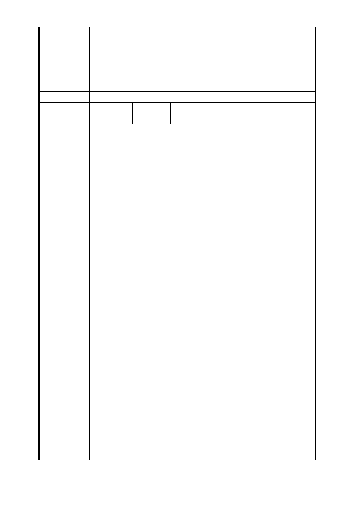

法，均有法規條例可循，有法有據，市府僅依行政程序予以
答復，並未明確說明法規事項，僅依主觀判斷或誤用律法，
是官是匪，應有法治。
建議辦法
市府回應
意見
同編號捷四-10 回應意見。
委員會決議 同編號交一－1 委員會決議。
編
號 捷四-13
陳情人
反對北市捷運萬大線捷四用地拆遷自
救會張淑華等 15 人連署（103.9.15）
反對北市捷連萬大線捷四用地拆遷自救會連署書
緣由:
一、家破人亡流離失所
台北市捷運萬大線LG01站土地開發案，其中捷四用地為我等
現住戶地主，已在此地居住六十年，目前面臨無情無理的拆
遷，我等現住戶地主即將家破人亡，流離失所，情何以堪!
二、生活品質重大打擊危害
我們一直忍氣吞聲，為配合捷運萬大線LG01站土地開發案，
但本案已紛紛擾擾多年，一拖再拖嚴重影響生活安居，對生
活品質機能產生重大打擊與危害，一動不如一靜，我們誓死
反對拆遷。
三、臨時市場憑什麼建於我們土地上?
最近又突然政策大轉彎，將海砂屋建的南門市場納入本案，
配合改建南門市場2017年搬家，將先建臨時市場暫用捷四用
陳 情 理 由 地， 2021年遷回新大樓。臨時市場建於我等住戶地主的土地
上，我等住戶竟先拆遷，這是憑了什麼?
四、乞丐趕廟公豈有此理
捷運局說：「 ...並待南門市場用地捷運設施與大樓重建至
一段落，即可遷回攤商，並接續進行捷四用地...施工事
宜...」，如此擺明了是南門市場用地先建，而我們這些地主
卻要配合那些攤商先拆，這種便宜行事作為，真是「攤商趕
走地主、乞丐趕走廟公」，天下何有其無理至此?我等住戶權
益受到嚴重侵害當然堅決反對。
五、計畫延岩嚴重侵害權益
依計畫時程，南門市場臨時市場建於我等現住戶地主土地，
2021年建好後遷回新大樓。如此一來，捷運萬大線LGOl站土
地開發案又殺進南門市場共構改建案，計畫將受影響而曠日
廢時，時程大大推遲延岩，嚴重侵害我等現住戶地主的權益，
我等地主誓死堅決反對到底。
建議辦法
訴求：「堅決反對拆遷、一切維持現狀」
我等現住戶地主的訴求：
- 50 -